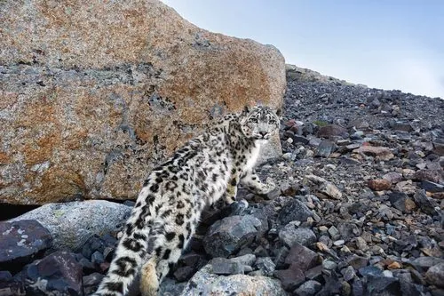

哺乳动物 · 动物界
雪豹 Panthera uncia

生活在中亚高山的“雪山之王”，灰白毛色与长尾适应严寒岩壁，行踪隐秘，是高山生态系统的顶级捕食者。
- 分类
- 门脊索动物门纲哺乳纲目食肉目科猫科属豹属
- 栖息环境
- 海拔 2000–6000 米的高山裸岩、高寒草甸与雪线附近的岩壁
- 地理分布
- 中亚 12 国的高山地带，中国青藏高原及新疆、甘肃、四川西部为核心区
- 保护级别
- IUCN 易危（VU）；中国国家一级保护动物
物种志
雪豹体长 1.0–1.3 米，尾长 0.8–1.05 米，体重 22–55 kg。它全身披覆厚重的灰白色被毛，密布黑色玫瑰斑和斑点，尾毛极蓬松，几乎与身体等长，卧下时可裹住口鼻御寒。宽阔的脚掌像雪鞋，帮助它在积雪和碎石坡上行走。
雪豹栖息于海拔 2000–6000 米的高山裸岩与高寒草甸，常在雪线附近活动，主食岩羊、北山羊等高山有蹄类，也捕食旱獭、雪鸡。它多在晨昏和夜间单独狩猎，能借地形埋伏，一跃可达 6 米远。与虎、狮不同，雪豹的舌骨结构使它不能吼叫，只能发出呼噜、嘶嘶和低沉的叫声。作为高山生态系统的顶级捕食者，它的分布横跨中亚 12 个国家，中国是核心分布区，野生种群估计约 4000–7000 只。
形态与习性
- 食性岩羊、北山羊为主，也捕食旱獭与雪鸡
- 体长1.0–1.3 m，尾长 0.8–1.05 m
- 体重22–55 kg
- 寿命野外约 10–12 年
- 繁殖1–3 月发情，妊娠期约 90–105 天
- 栖息海拔2000–6000 m 的高山裸岩与草甸
- 活动节律晨昏和夜间单独活动
趣味知识
- 雪豹的舌骨结构与其他豹属动物不同，不能像虎狮那样吼叫。
- 它的尾巴几乎与身体等长，卧下时可裹住口鼻御寒。
- 雪豹一跃可达 6 m 远，能在陡峭岩壁上追击岩羊。
- 雪豹活动范围可覆盖数百平方千米，野外行踪极难发现。